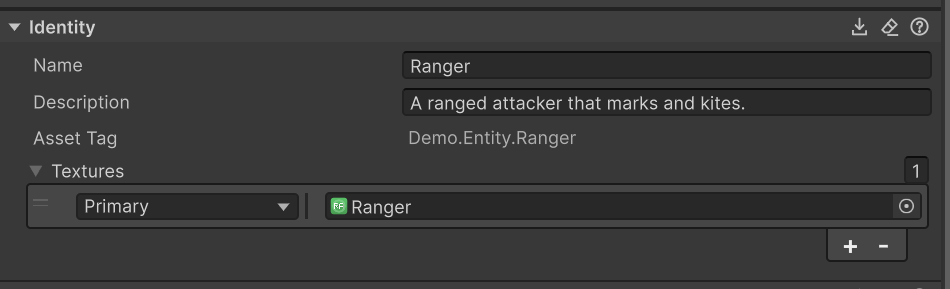

Identity
The Identity section names the entity, shows its asset tag and holds its icons.
sequenceDiagram
autonumber
participant B as Bootstrapper
participant PC as ProcessControl
participant W as ProcessWorld
participant PCB as ProcessControlBlock
participant H as GAS hub
participant C as GASCore
participant S as Subsystems
B->>B: Bootstrap(), TagRegistry.Initialize, AttributeRegistry.Add
B->>PC: instantiate ProcessControlPrefab if there is no Instance
B->>PC: Bootstrap(deferStartState true)
PC->>W: ResetProcessControl(Ready), ApplyTickRate()
B->>PC: Register(GameRootPrefab).With(Default()).Run(out relay)
B->>PC: EnterStartState, BootstrapOverrides(), DeferredInit()
PC->>PC: CollectSceneProcesses(), by priority then depth
PC->>W: Register(p).With(Default()).In(this).Run()
Note over PC,W: The taker is the given world, else the Instance's World. The handler is the given one, else the packet's source, else GameRoot
W->>W: refuse AlreadyRegistered or ProcessControlClosed
W->>PCB: ProcessControlBlock.Generate makes the ProcessRelay
W->>W: HandlerSubscribeProcess(relay), SetProcess, ConfigureWrapper
W->>PCB: Initialize()
PCB->>H: SendProcessData(data, relay), WhenInitialize()
alt Mono hub
H->>C: new GASCore(this, Callbacks)
H->>C: Initialize(new RuntimeEntityIdentity(EntityData), affiliation)
else Runtime hub
Note over H,C: Its constructor already built and initialized the GASCore. WhenInitialize applies a registration AFFILIATION
end
C->>C: localData.Init(identity), ForgeEntities.Add(owner)
C->>S: Setup each subsystem, AttributeSystem.Setup(AttributeSet)
C->>C: InitializeEndOfFrame() makes ActionQueue, FrameSummary, AnalysisCache
C->>S: SetDeferredContext
C->>S: InitWorkers of the identity, the AttributeSet, the project's Every-Entity group
C->>S: LevelSystem.Register(AssetTag), AbilitySystem.Initialize(StartingAbilities)
C->>S: AttributeSystem.Initialize(), a CachedAttributeValue each, a zero pulse
C->>S: ItemSystem.Initialize(StartingItems), CompileGrantedTags()
C->>S: ActivateImmediateAbilities(), SpawnBody(), components Register
C-->>H: Callbacks.SystemInitialized()
W->>W: Callbacks.OnProcessRegistered
W->>PCB: the default transition for its lifecycle
Note over W,PCB: SelfTerminating, RunThenWait and Synchronous go to Running. RequiresControl waits for relay.Run()
From the Bootstrapper to a registered entity. The runtime hub initializes in its constructor, the Mono hub when it registers.

The Ranger's Identity section.
| Property | Description |
|---|---|
| Name | The entity's display name, which also gives the asset tag. Renaming the entity changes its tag, so update anything that names the old tag. |
| Description | Free text for your UI. |
| Asset Tag | Read-only, made from the Name: punctuation is dropped, and each word is capitalised and joined. |
| Textures | Icons, each paired with a tag. The texture tagged Primary is the entity's icon; without one, the first texture is used. |
The asset tag is stored when you edit the Name, and the inspector header shows it after the entity's type. If the stored tag differs from the one the Name gives, it shows in warning text with an Update button that stores the new one.